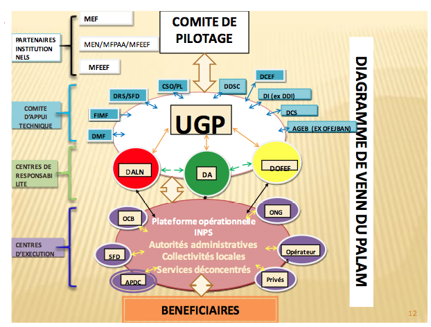

Digramme

Le diagramme de Venn ainsi présenté, est structuré pour refléter le montage institutionnel du PALAM, les rôles et responsabilités des différents acteurs impliqués dans la mise en œuvre.
Il fait apparaître leurs interrelations et niveaux d’implication, selon leurs domaines de compétences, à travers des couleurs et formes (flèches, lignes).